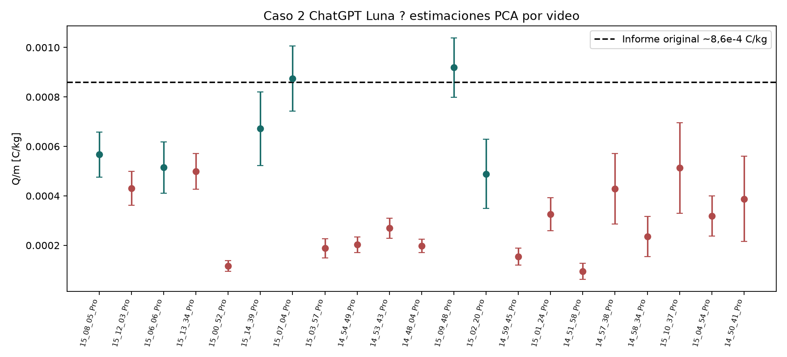
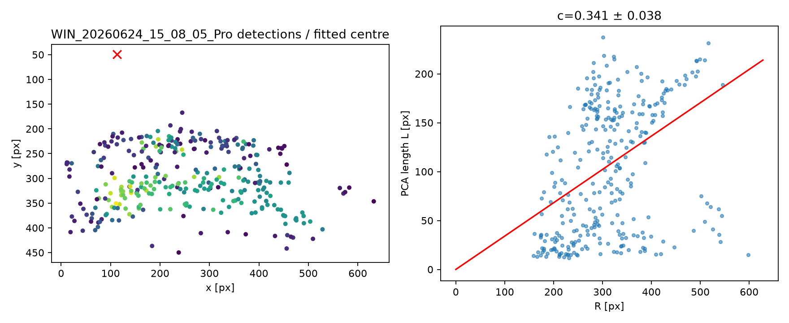
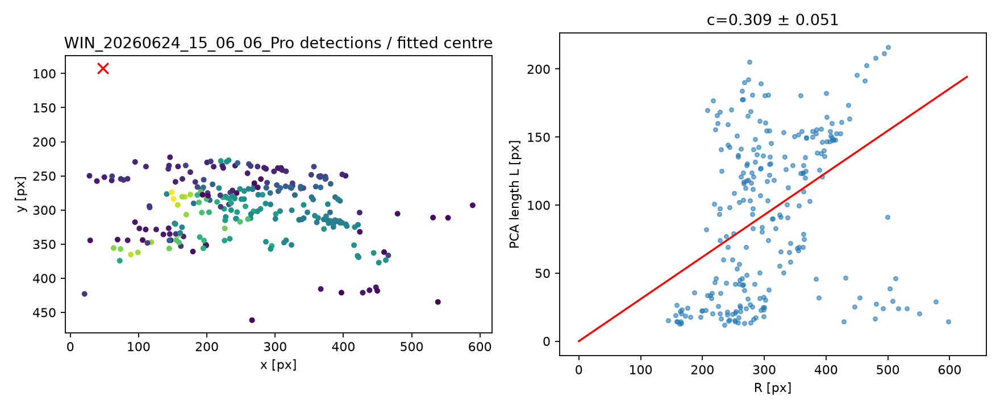
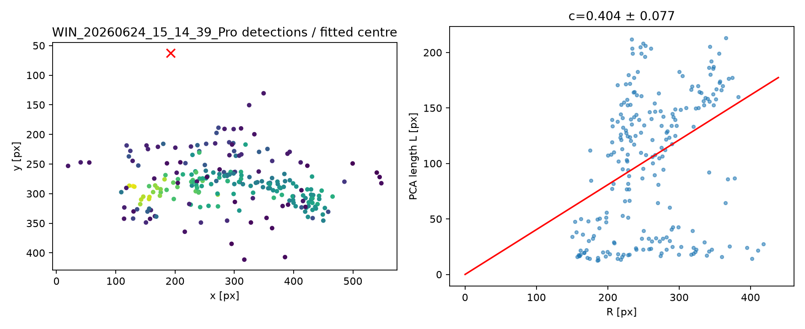
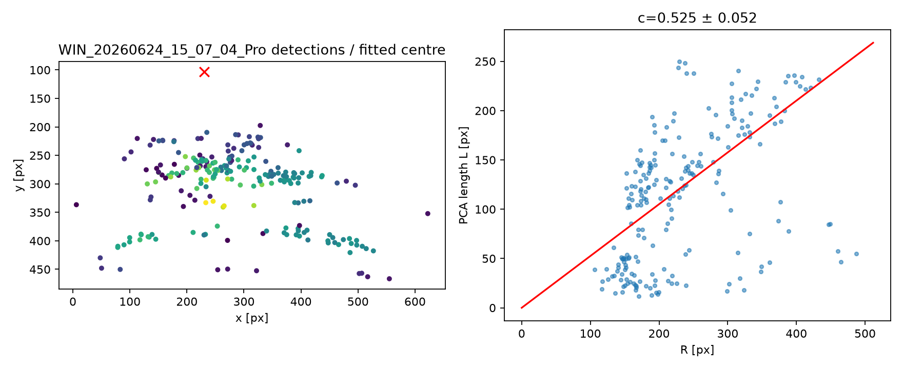

Reanálisis de videos de micromoción
Caso 2 · GPT-6-Luna medium · modelo eficiente basado en momentos de imagen/PCA
Relación con el Caso 2
Este análisis usa los mismos 21 videos y el mismo problema físico del Caso 2. La diferencia está en el estimador geométrico: cada traza se representa mediante el autovalor principal de sus píxeles. El modelo es más eficiente computacionalmente que el área–perímetro del Caso 4 porque usa una sola segmentación, no calcula perímetros ni repite cinco umbrales.
Resumen de videos retenidos
| Video | Detecciones | Centro (px) | c | Q/m [C/kg] | Estado |
|---|---|---|---|---|---|
| 15_08_05 | 313 | (113,2; 49,3) | 0,341 ± 0,038 | (5,67 ± 0,91)×10⁻⁴ | Retenido |
| 15_06_06 | 251 | (48,0; 92,5) | 0,309 ± 0,051 | (5,15 ± 1,04)×10⁻⁴ | Retenido |
| 15_14_39 | 228 | (192,5; 62,4) | 0,404 ± 0,077 | (6,72 ± 1,49)×10⁻⁴ | Retenido |
| 15_07_04 | 221 | (230,1; 103,2) | 0,525 ± 0,052 | (8,74 ± 1,32)×10⁻⁴ | Retenido |
| 15_09_48 | 175 | (178,4; 148,6) | 0,552 ± 0,034 | (9,19 ± 1,19)×10⁻⁴ | Retenido |
| 15_02_20 | 164 | (20,0; 164,8) | 0,294 ± 0,077 | (4,89 ± 1,40)×10⁻⁴ | Retenido |
Vista conjunta

Los puntos rojos corresponden a videos rechazados por centro en el borde o bootstrap inestable; los verdes son los seis retenidos.
Modelo y ecuaciones
Para una componente conexa se calcula la covarianza de sus píxeles. Con λ₁ como autovalor mayor, L_PCA = √(12λ₁). El ajuste robusto es L_PCA = cR, con el centro y c libres.
La conversión usada es Q/m = c r₀²(2πf)²/(4V), con r₀ = 8,90 ± 0,50 mm, V = 1175 ± 24 V y f = 50 Hz.
Comparación crítica
- Evita esqueletización, búsqueda de extremos y recorrido de grafos.
- Usa una sola segmentación y un cálculo de momentos por componente.
- Es más rápido y simple que área–perímetro, pero la PCA subestima trazas curvas.
- La dispersión obtenida es mayor; eficiencia computacional no significa mayor precisión.
- El centro sigue siendo el principal problema cuando las trazas cubren un abanico angular reducido.
Qué hice
- Procesé los 21 videos con 40 cuadros equiespaciados.
- Segmenté el canal rojo con umbral 30 y filtré componentes por área y elongación.
- Medí la longitud mediante momentos de imagen/PCA.
- Ajusté centro y pendiente con pérdida robusta.
- Estimé la incertidumbre de `c` con 300 bootstrap.
- Propagué r₀ y V y agregué la dispersión entre los seis videos retenidos.
Figuras por video




Archivos para reproducir
Código · CSV · JSON · Figura resumen